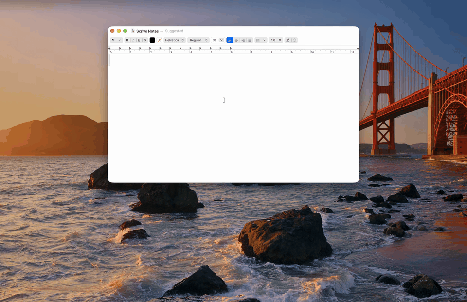
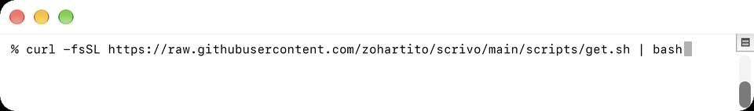
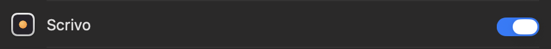
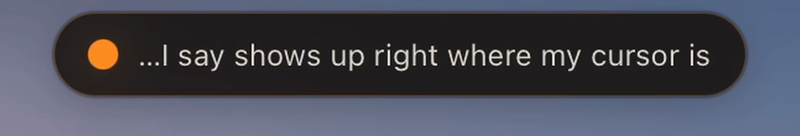

Private by design
Speech recognition runs on your own computer. No account, no cloud service, no telemetry. The internet is only used to install it and download the speech model.
Hold a key, talk, and your words appear wherever you're typing.
Free and open source. It runs on your own computer (a Mac, or a Windows PC in alpha), so your voice never leaves it.

Emails, notes, messages, documents: anywhere your cursor is, Scrivo can write for you.
Speech recognition runs on your own computer. No account, no cloud service, no telemetry. The internet is only used to install it and download the speech model.
Hold the key, say your sentence, let go, and the text lands at your cursor. Tap twice to talk hands-free, tap once more to stop.
MIT licensed and built in the open. Whisper understands about 100 languages; optional engines add speed (Parakeet) or live words in English (Nemotron).
You need a Mac with Apple silicon (M1 or newer) and macOS 14 or later. On Windows? See Windows.
Open Terminal: press ⌘ Space, type Terminal, press Return. Copy this line, paste it with ⌘ V, and press Return.
curl -fsSL https://raw.githubusercontent.com/zohartito/scrivo/main/scripts/get.sh | bash

The first time it downloads the speech model (about 1.6 GB), so give it a few minutes. It is finished when Terminal says Done. If it asks for Apple's command line tools or Python 3.12, do what the message says and paste the line again.
When Terminal says Done, Scrivo opens by itself. (Later, open it like any app: ⌘ Space, type Scrivo, press Return.) It asks for:

Click where you want the words. Hold the Option ⌥ key on the right side of the space bar, say your sentence, and let go. Your words appear at the cursor.

While you hold the key, a small pill with an orange dot shows Scrivo is listening. Scrivo lives in the menu bar: recent dictations, Settings (another key, your languages, start at login) and Quit.
Scrivo also runs on Windows 10/11 as a tray app: hold right Ctrl to talk. In PowerShell:
irm https://raw.githubusercontent.com/zohartito/scrivo/main/scripts/get.ps1 | iex
It needs Git and 64-bit Python 3.13 and says how to install either. Details are in the Windows guide.
No. Recording and transcription happen on your computer. Installing and the first model download need internet, and Check for Updates contacts GitHub only when you click it.
Yes. Scrivo is open source under the MIT license; the speech models have their own licenses.
The standard engine (Whisper) understands about 100 languages and can pick automatically among the ones you choose. The optional Parakeet engine covers 25 European languages; the optional Nemotron engine is English only and shows words while you talk.
It installs from source with one script. So far it was tested by a person on one Mac and one Windows PC, and the one-line installers on clean machines. Please report what you find on GitHub.
Yes. Sotto is now Scrivo (Italian for "I write"): same app, new name. Old links keep working, and an existing install moves over when you paste the install line again.